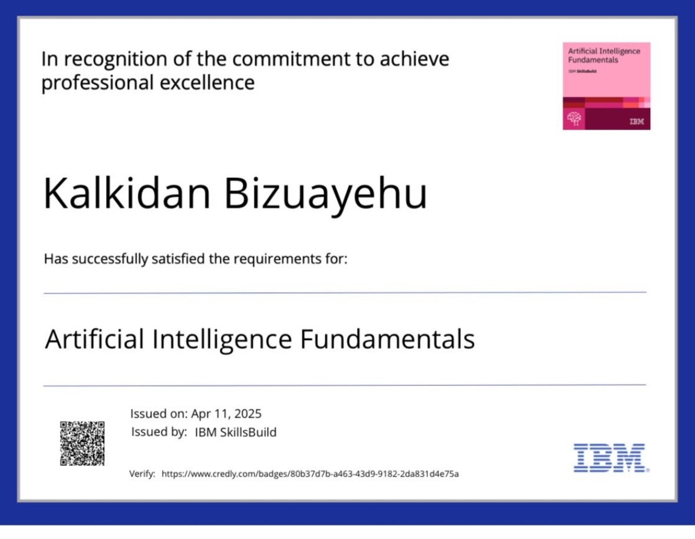
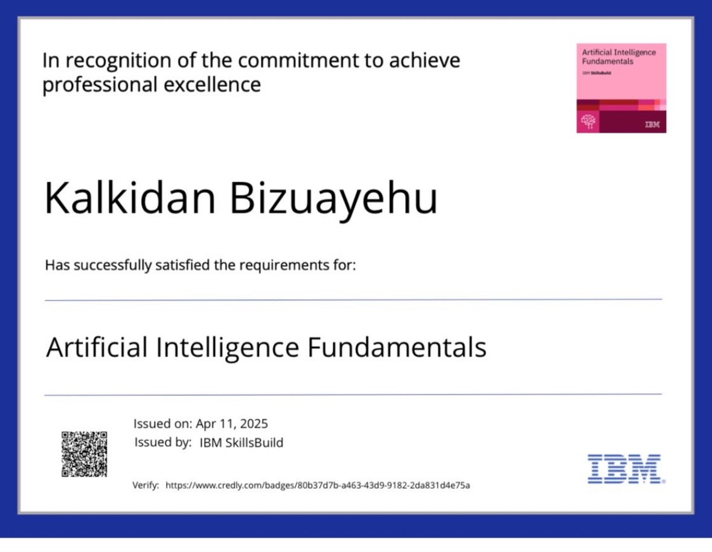

About Me
I'm a future focused computer programming student and FinTech enthusiast with a unique background in aviation safety, finance, and customer service. My journey into tech began in fast-paced, highly regulated environments, where I witnessed the growing need for skilled developers in aviation finance. Motivated by this insight, I chose to pursue formal training in Computer Programming and Analysis at Humber College I've since immersed myself in core technologies including Java, HTML, CSS, and Operating Systems and I continue to grow each day as a lifelong learner.
What I Bring
I combine formal technical training with years of hands-on experience in service oriented roles. This unique blend gives me more than a solid foundation in coding it equips me with resilience, empathy, and a collaborative mindset essential for success in today's digital teams. I'm also passionate about giving back. As a volunteer with the Horn of African Elders Association, I mentor elders on digital literacy and online safety. This initiative in partnership with Connected Canadians, reflects my belief that technology should empower everyone, not just a select few. I also hold certifications in Artificial Intelligence and Agile Project Management, which complement my practical skills with a strong understanding of modern development practices and emerging technologies. Outside of code, I'm an avid reader and explorer. Whether diving into personal development books or historical fiction, or planning my next adventure, I bring curiosity, care, and commitment to everything I do.
Snapshots of My Journey
 
